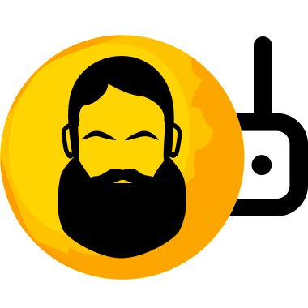

Best endpoint per subnet and node (lowest in-tunnel loss, then in-tunnel ping)
| SUBNET | ENDPOINT | ENDPOINT PING | TUN PING | LOSS | SEEN AS | NODE | NODE LOCATION |
|---|
Нажмите на строку, чтобы собрать конфиг
Благодарность автору StressOzz за функционал Zapret Manager. Первоисточник: github.com/StressOzz/Zapret-Manager
Проверка доступности доменов с активной стратегией Zapret.
Один или несколько доменов через пробел, например: x.com vk.com
Выберите одну стратегию v — она временно применится, пройдёт проверка доменов, затем конфиг восстановится.
Сохранённые результаты тестов из этой панели — с датой. Нажмите на запись, чтобы посмотреть детали.
Повторное нажатие на выбранную запись — закрыть просмотр
Сводка полного теста стратегий v, если он был запущен через оригинальный Zapret-Manager на роутере.
Не закрывайте вкладку, пока идёт поиск. Браузер спросит подтверждение; на роутере поиск при этом не останавливается.
Записи в /etc/hosts.